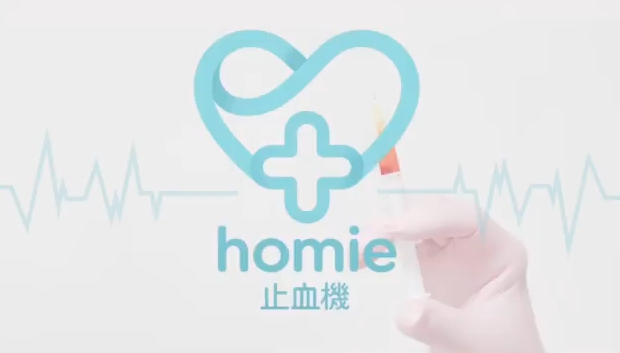
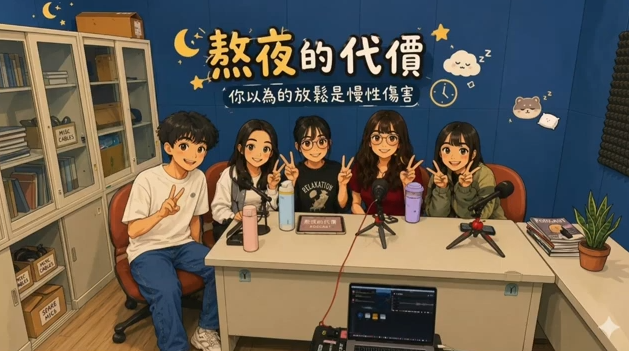

作品集

創新創業
homie 止血機 創新創業企劃
結合醫護教育與跨領域技術之創新醫療器材與商業企劃案。

Podcast
Podcast《熬夜的代價》
探討「你以為的放鬆是慢性傷害」健康議題之音訊節目與企劃。
📖
睡眠怪獸的祕密
電子書
《睡眠怪獸的祕密》電子書
以故事導向與角色化方式，協助國小生認識睡眠健康與建立規律作息。
🧩
H5P 互動學習
H5P 互動
H5P 數位互動學習模組
運用 H5P 工具規劃數位問答與互動組件，增進自主學習樂趣。
🥽
AR / VR 實境急救
AR / VR 專案
C手相救 AR / VR 專案
結合虛擬實境模擬心肺復甦術（CPR）急救流程，強化操作記憶。

平面視覺
簡報及海報模板製作
醫教系視覺模板、時間軸、階梯圖及衛教宣導海報設計。
🎬
鏡中不是我
影音分鏡
腳本企劃《鏡中不是我》
擔任導演執導短片作品，探討容貌焦慮與社群媒體時代下的自我認同危機。
[ 圖片/預覽圖 展位 ]
衛教專案
衛教宣導專案
[內容預留]：介紹衛教主題發想、宣導懶人包與推廣效益。